AGENTS BAR / FORTALEZA / 0.8
Itens prontos para a HUD
24 sprites • Aseprite editável • PNG transparente • 48 px nativos / 96 px ampliados
Armas
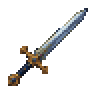
Espada da Vanguardaweapons-01 · 48 × 48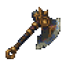
Machado de Brasaweapons-02 · 48 × 48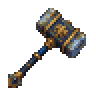
Martelo da Forjaweapons-03 · 48 × 48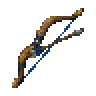
Arco do Vigiaweapons-04 · 48 × 48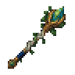
Cajado de Lumaweapons-05 · 48 × 48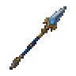
Lança da Tempestadeweapons-06 · 48 × 48Armaduras
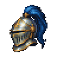
Elmo da Fortalezaarmor-01 · 48 × 48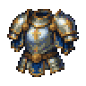
Peitoral da Vanguardaarmor-02 · 48 × 48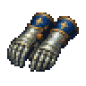
Manoplas de Açoarmor-03 · 48 × 48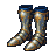
Grevas da Guardaarmor-04 · 48 × 48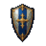
Escudo do Juramentoarmor-05 · 48 × 48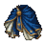
Manto da Fortalezaarmor-06 · 48 × 48Relíquias
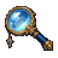
Lente de precisãorelics-01 · 48 × 48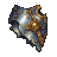
Placa do Rebocadorrelics-02 · 48 × 48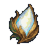
Semente luminosarelics-03 · 48 × 48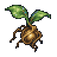
Broto ancestralrelics-04 · 48 × 48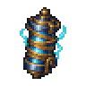
Bobina de tempestaderelics-05 · 48 × 48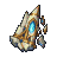
Fragmento do farolrelics-06 · 48 × 48Materiais
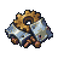
Sucatamaterials-01 · 48 × 48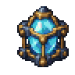
Núcleo de energiamaterials-02 · 48 × 48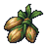
Sementesmaterials-03 · 48 × 48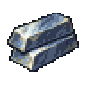
Lingotes de açomaterials-04 · 48 × 48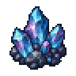
Cristais de tempestadematerials-05 · 48 × 48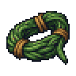
Fibra ancestralmaterials-06 · 48 × 48